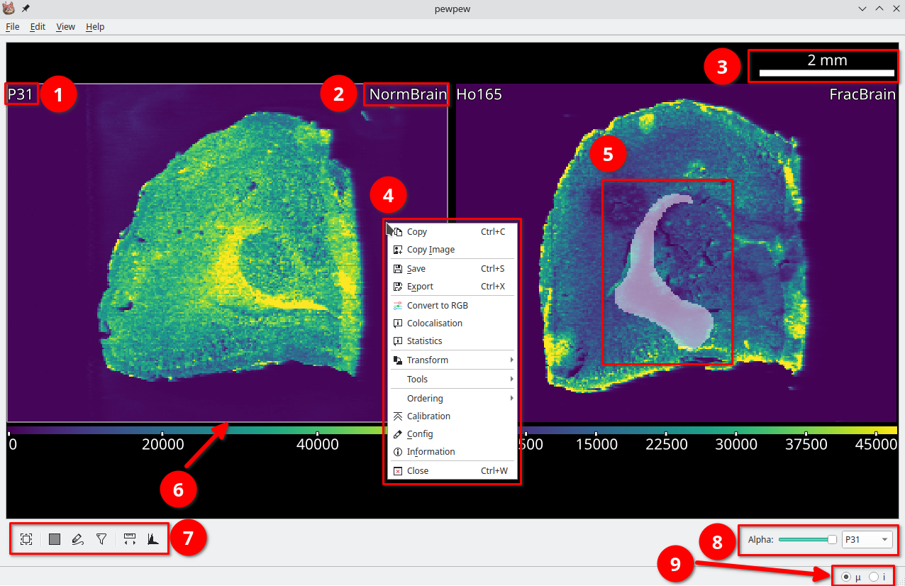

Basic Usage

An open image in pew². (1) Selected element. (2) Image name, right click to rename. (3) Scalebar. (4) Right click context menu. (5) A selected region. (6) Active image is highlighted. (7) Tools for the active image. (8) Options for selected image. (9) Cursor unit, (μ = μm, i = pixel).
The first step in using pew² is to load or import data. For an example of using the import wizard see Example: Importing file-per-line data or read Import Wizard. Images can be moved by click and dragging with either the left mouse button and the scene navigated using the middle mouse and scroll wheel. New scenes can be added using Edit -> New Tab.
Import and export controls are located in the File menu, parameters in the Edit menu and tools for calibration, processing and visualisation of data under Right Click -> Tools.
The View menu contains options for customising the visual style of images. Here you will find controls for the size and visibility of text, the color table and image smoothing. Color table ranges are individually editable for each open element via View -> Colortable -> Set Range or Ctrl+R. A range of perceptually uniform (or near) color tables are available.
Selections
pew² implements two different tools for manual region selection, the Rectangle Selector and Lasso Selector. These tools function similarly to selection tools in other programs, with regions selected by clicking and dragging on the image.
Holding Shift will add to the currently selected region while holding Ctrl will subtract from it.
Saving and Exporting
Files can be saved as a Numpy archive via the right click context menu Right Click -> Save. This archive will also include any calibration and configurations applied to the image. To export use either the Export Dialog Right Click -> Export or the batch Export All Dialog File -> Export All. These dialogs export the current or all images in a range of formats.